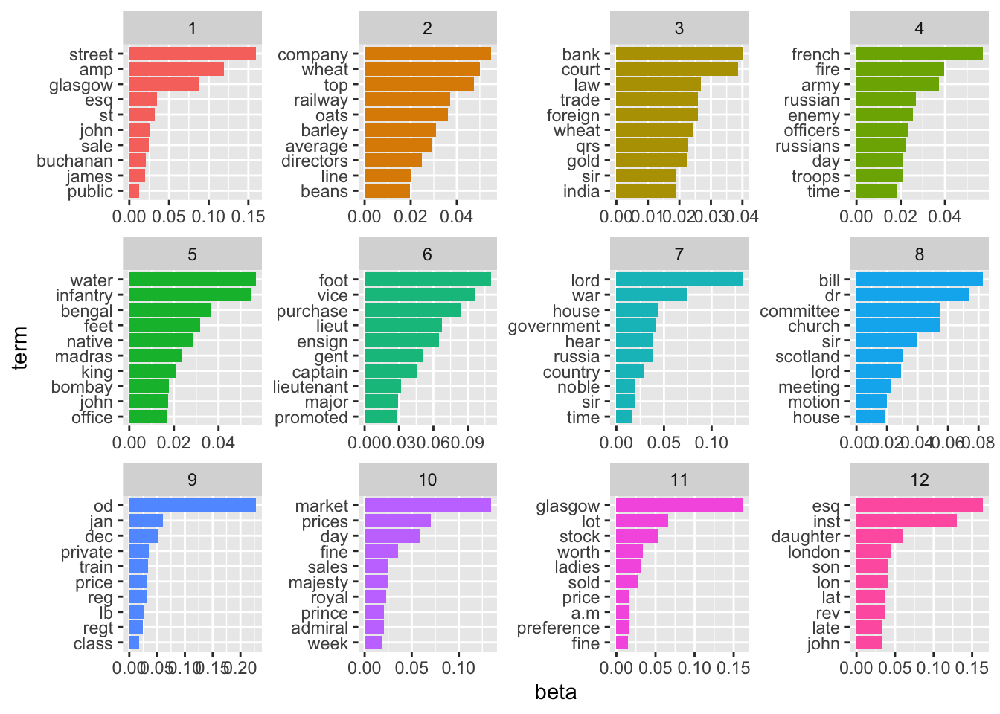

install.packages('tidyverse')
install.packages('tidytext')
install.packages('topicmodels')11 Topic Modelling
Topic modelling tried to statistically discern a number of ‘topics’ within a set of documents, expressed as a set of significant keywords. The number of topics are set in advance, but the keywords which make up each are found through unsupervised learning. In the case of newspapers, topic modelling may be useful in understanding the subject of the articles within them. Imagine a set of newspapers, with five articles on various subjects. One might be a foreign news story, another sports, and a third some advertisements.
Topic modelling might help us to sort each of these articles together, based on the keywords they use. A typical topic model might be something like the following. We set the number of topics in advance based on our prior knowledge of how we expect the articles to look, in this case, 3 topics. Next the topic model will look at the keywords which make up each document, and, using an unsupervised learning algorithm, will attempt to figure out the set of three topics which best describe the documents as a whole, and then also give a metric for how each document is made up of these topics. The output would look something like:
Topic 1 keywords: score, match, goal, win
Topic 2 keywords: French, war, diplomat, office
Topic 3 keywords: offer, bargain, sale, price
From this list of keywords, its up to the user to determine, if any, the unifying subject of each topic. In this case it’s fairly obvious, that topic 1 is sport, topic 2 is foreign news, and so forth, but this may not necessarily be the case.
As well as the topics, the model will tell us the proportion of each topic which makes up each document. The output for our 4 articles will look something like this:
Article 1: topic 1 (.89), topic 2 (.11)
Article 2: topic 2 (.95), topic 3 (.05)
Article 3: topic 3 (.99), topic 3 (.01)
Article 4: topic 1 (.6), topic 3 (.4)
And so forth. The numbers in parentheses represent the mixture of topics within those documents. Most cover one topic primarily, but some, such as article 4, have keywords which indicate they are more of a mixture.
From this output, plus our interpretation of the topics using the keywords above, we can begin to tell something about the makeup of the articles. Topic modelling, when it works well, can be very useful. It does have its limitations, however. It works best if each document covers one clear subject, and if the documents are a mix of material it may be more difficult to get meaningful topics from your corpus. It is also quite sensitive, in some ways, to things like OCR errors. Oftentimes one of the topics will be made up of keywords which are just OCR errors. Interpretation is a key part of topic modelling.
Methods
There are numerous ways to extract topics from documents. One which has been used extensively in digital humanities is Latent Dirichlet Allocation (LDA). The basic aim of the LDA algorithm is to figure out the mixture of words in each topic. It starts out by randomly assigning all the words into topics, and then, for each word in the data:
It assumes that all other words are in the correct topics.
It moves the word in question to each topic, and calculates the probability that each is the correct topic, based on the other words currently in that topic, and their relationship to the word and the other documents it appears within.
It does this lots of times until it reaches an optimal, stable state.
LDA topic modelling has its limitations, for example it treats documents as ‘bag of words’, meaning their order is not taken into account. Often, the resulting topics (which are represented simply as a group of keywords) are not easy to interpret. Newer methods of topic modelling, such as contextual topic modelling (CTM) are available which take into account context and word order but these are not, as of now, implemented within any R packages.
Topic modelling with the library ‘topicmodels’
This chapter uses three libraries: tidyverse, tidytext, and topicmodels. If you are missing any of these, you can install them with the following code:
library(tidyverse)Warning: package 'readr' was built under R version 4.0.5── Attaching core tidyverse packages ──────────────────────── tidyverse 2.0.0 ──
✔ dplyr 1.1.2 ✔ readr 2.1.2
✔ forcats 1.0.0 ✔ stringr 1.5.0
✔ ggplot2 3.4.2 ✔ tibble 3.2.1
✔ lubridate 1.9.2 ✔ tidyr 1.3.0
✔ purrr 1.0.1
── Conflicts ────────────────────────────────────────── tidyverse_conflicts() ──
✖ dplyr::filter() masks stats::filter()
✖ dplyr::lag() masks stats::lag()
ℹ Use the conflicted package (<http://conflicted.r-lib.org/>) to force all conflicts to become errorslibrary(tidytext)
library(topicmodels)Load the news dataframe and relevant libraries
Topic modelling can be quite computationally-intensive. To speed things up, we’ll just look at a single newspaper title for the year 1855.
Either construct your own corpus by following Chapter 8 and Chapter 9, or download and open the ready-made .zip file with all issues from 1855. Next, get these articles into the correct format. See Chapter 10 for an explanation of this code:
news_sample_dataframe = list.files("newspaper_text/",
pattern = "csv",
recursive = TRUE,
full.names = TRUE)
all_files = lapply(news_sample_dataframe, data.table::fread)
names(all_files) = news_sample_dataframe
all_files_df = data.table::rbindlist(all_files, idcol = 'filename')
news_df = all_files_df %>%
mutate(filename = basename(filename))
title_names_df = tibble(newspaper_id = c('0002090', '0002194', '0002244', '0002642', '0002645', '0003089', '0002977'), newspaper_title = c('The Liverpool Standard And General Commercial Advertiser', 'The Sun', 'Colored News', 'The Express', 'The Press', 'Glasgow Courier', 'Swansea and Glamorgan Herald'))
news_df = news_df %>% separate(filename,
into = c('newspaper_id', 'date'), sep = "_") %>% # separate the filename into some arbitrarily named colums
mutate(date = str_remove(date, "\\.csv")) %>%
select(newspaper_id, date, art, text) %>%
mutate(date = ymd(date)) %>% # make a date column, and turn it into date format
mutate(article_code = 1:n()) %>% # give every article a unique code
select(article_code, everything()) %>%
left_join(title_names_df, by = 'newspaper_id')Make a new dataset of only one title: the Swansea and Glamorgan Herald, using its unique ID:
news_for_tm = news_df %>%
filter(newspaper_id == '0003089')Next, use unnest_tokens to tokenise the data. For topic modelling, it can be good to remove stop words, and words which don’t occur very frequently. We’ll also remove any words made up of numbers, as an additional cleaning step. This is done using anti_join() and filter() with a regular expression to match any number.
data("stop_words")
news_for_tm = news_for_tm %>%
unnest_tokens(output = word, input = text) %>%
anti_join(stop_words) %>%
filter(!str_detect(word, "[0-9]"))Joining with `by = join_by(word)`Create a dataframe of word counts with tf_idf scores
The LDA algorithm expects a count of the words found in each document. We will generate the necessary statistics using the tidytext package, as used in the previous chapter. First, make a dataframe of the words in each document, with the count and the tf-idf score. This will be used to filter and weight the text data.
First, get the word counts for each article:
issue_words = news_for_tm %>%
group_by(article_code, word) %>%
tally() %>%
arrange(desc(n))Next, use bind_tf_idf() to get the tf_idf scores:
issue_words_tf_idf = issue_words %>%
bind_tf_idf(word, article_code, n)Make a ‘document term matrix’
Using the function cast_dtm() from the topicmodels package, make a document term matrix. This is a matrix with all the documents on one axis, all the words on the other, and the number of times that word appears as the value. We’ll also filter out words with a low tf-idf score, and only include words that occur at least 5 times.
dtm_long <- issue_words_tf_idf %>%
filter(tf_idf > 0.00006) %>%
filter(n>5) %>%
cast_dtm(article_code, word, n)Use the LDA() functionfrom the topicmodels package to compute the model. For this function we need to specify the number of topics in advance, using the argument k, and we’ll set the random seed to a set number for reproducibility. It can take some time to run the model, depending on the size of the corpus.
lda_model_long_1 <- LDA(dtm_long,k =12, control = list(seed = 1234))The object lda_model_long_1 is a list containing, amongst other things, a list of the topics and the words which make them up, and a list of the documents with the mixture of topics within them. To view this object easily, we can use the tidy function from the tidytext package. The tidy function is a generic, meaning it can be used in different ways depending on the input. In this case, the tidytext package contains a method specifically created for turning the outputs of the LDA topic model into a readable format. We can choose to look either at the beta (the mixture of terms in topics) or gamma (the mixture of topics in documents).
beta_result <- tidytext::tidy(lda_model_long_1,matrix = 'beta')
gamma_result <- tidytext::tidy(lda_model_long_1,matrix = 'gamma')What information do these contain? Well, let’s look first at the mixture of keywords within a certain topic, using the ‘beta’ matrix:
beta_result %>% filter(topic ==1) %>%
slice_max(order_by = beta, n = 10) %>%
kableExtra::kbl()| topic | term | beta |
|---|---|---|
| 1 | street | 0.1591182 |
| 1 | amp | 0.1189573 |
| 1 | glasgow | 0.0875793 |
| 1 | esq | 0.0351185 |
| 1 | st | 0.0316020 |
| 1 | john | 0.0266981 |
| 1 | sale | 0.0241553 |
| 1 | buchanan | 0.0209430 |
| 1 | james | 0.0198344 |
| 1 | public | 0.0127428 |
We can plot the top words which make up each of the topics, to get an idea of how the articles have been categorised as a whole. Some of these make sense: there’s a topic which seems to be about university and education, one with words relating to poor laws, and a couple about disease in the army, as well as some more which contain words probably related to the Crimean war.
beta_result %>%
group_by(topic) %>%
slice_max(order_by = beta, n = 10) %>%
ungroup()%>%
mutate(topic = as.factor(topic),
term = reorder_within(term, beta, topic)) %>%
ggplot(aes(term, beta, fill = factor(topic))) +
geom_col(show.legend = FALSE) +
facet_wrap(~ topic, scales = "free")+
scale_x_reordered() +
coord_flip()
The result seems to have picked some sensible topics: Each is a mixture of words, and the most important words seem to be sensibly connected to each other. It looks like there is a topic of government news, one on the Crimean war, one on markets and the economy/trade, and so forth.
We can also look at the other view, and look at how each article has been assigned to topics. Let’s take a look at the document which has been signed the highest probability for topic 4, which seems to be about the Crimean War:
gamma_result <- tidytext::tidy(lda_model_long_1, 'gamma')
gamma_result %>% filter(topic == 4) %>% arrange(desc(gamma)) %>% head(10) %>%
kableExtra::kbl()| document | topic | gamma |
|---|---|---|
| 94868 | 4 | 0.9996461 |
| 90659 | 4 | 0.9995358 |
| 90839 | 4 | 0.9986704 |
| 89320 | 4 | 0.9984336 |
| 89587 | 4 | 0.9978388 |
| 89378 | 4 | 0.9978062 |
| 94037 | 4 | 0.9977378 |
| 94766 | 4 | 0.9977020 |
| 92196 | 4 | 0.9976650 |
| 95635 | 4 | 0.9976268 |
We can now read this document:
news_df %>% filter(article_code ==91026 ) %>%
mutate(text = str_trunc(text, 5000)) %>% pull(text)[1] "J. K. DONALD 4; W. NEVILLg DE G to inform their Friends and the Puldic that in : _L) the binning of Juno they will OPEN tl,jt SHOP No. 8, ARGYLL STREET, an WATCHMAKERS AND JEWELLERS, With a New, Large, and tt ell-Selected .S:ock of Gold and Silver Watches, Chains, and every deseiintion of Jewellery connected with the Trade, and trit,,t, by strict personal attention and moderate charges, to obtain • share of their favours. DONALD & NEVILL4 TEMPORARE PREMISES, 33, UNION StMEET. LADIES' CLOTII BOOTS, AT SEVEN SHILLINGS PER PAIR, EQUAL TO BESPOKE. WILSON & CO, 149, ARGYLL STREET, (Pourd Dour East qf St. Roods Square.) CONTINUATION OF THE PUBLIC SALE OF WILLIAM RAEBURN & CO.'S STOCK. AT No. 8, UNION STREET, GLASORW. - • ' TT having been found impossible to finish the Sale on I. Wednesday, the remainder of the GOODS will be SOLI, on Thursday, eonimeneing at Eleven °Timis Forenoon. The Goons to be SOLD consist of Wool and Kid Gloves, Black Brussels and Satin Handkerchiefs, Coloured Silk Neckerchiefs and Scarfs, Printed Bandan- nas and Coratn., Plain and Bordered Pockets, Beaufort, Albert, and Napoleon Cries, Buttons of various kinds, &c. "Looking at this, it looks like it might be a good way of understanding and categorising the articles in the document. Let’s take another perspective. Take the documents which have as their highest-probability topic number 4, and see how they distribute over time. This might tell us something about how the war was reported over the year.
gamma_result %>% group_by(document) %>%
slice_max(order_by = gamma, n = 1) %>%
filter(topic == 4) %>%
left_join(news_df %>%
mutate(article_code = as.character(article_code)),
by =c('document' = 'article_code')) %>%
mutate(week = ymd(cut(date, 'month'))) %>% ungroup() %>%
mutate(article_word_count = str_count(text)) %>%
count(week, wt = article_word_count) %>%
ggplot() + geom_col(aes(x = week, y = n))This gives us some sense of when reporting about the Crimean War may have peaked. September 1855 was an important time, because of the battle of Sevastepol. But it also looks like news about the war was fairly consistent across the year.
You can also group the articles by their percentage of each ‘topic’, and use this to find common thread between them - for more on this, see here:
Recommended Reading
Marjanen, Jani, Elaine Zosa, Simon Hengchen, Lidia Pivovarova, and Mikko Tolonen. “Topic Modelling Discourse Dynamics in Historical Newspapers,” 2020. https://doi.org/10.48550/ARXIV.2011.10428.
https://www.tidytextmining.com/topicmodeling.html